06 控件 各种按键
Qt中的各种按键
1. 按钮基类 QAbstractButton
在QT中为我们提供了可以直接使用的按钮控件, 如下图。这些按钮种类虽然繁多， 但是它们都拥有相同的父类
QAbstractButton。这些子类按钮的大部分属性都是从这个基类继承的，因此搞明白这个类为我们提供的相关功能还是非常重要的。
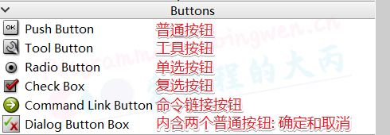
这些按键的继承关系如下：
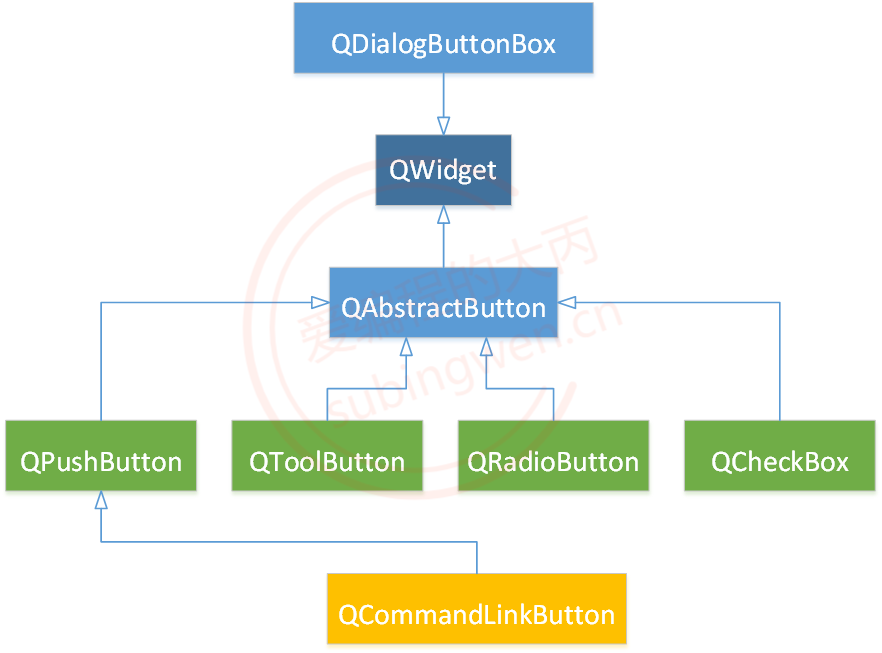下面介绍一下按键基类QAbstractButton类的常用API：
1.1按键的文字和图标
1 | // 参数text的内容显示到按钮上 |
1.2按键的Check属性
对应按钮来说, 一般有三种常见状态, 分别为: Normal, Hover, Pressed。
Normal: 普通状态, 没有和鼠标做任何接触
Hover: 悬停状态, 鼠标位于按钮之上, 但是并未按下
Pressed: 按压状态, 鼠标键在按钮上处于按下状态
默认情况下, 鼠标在按钮上按下, 按钮从 Normal 切换到 Pressed状态, 鼠标释放, 按钮从 Pressed恢复到Normal状态。
但是当我们给按钮设置了 check 属性之后，情况就有所不同了， 在按钮上释放鼠标键， 按钮依然会处在 Pressed状态, 再次点击按钮, 按钮才能恢复到 Normal 状态。具有check属性的按钮就相当于一个开关, 每点击一次才能实现一次状态的切换。
1 | // 判断按钮是否设置了checkable属性, 如果设置了点击按钮, 按钮一直处于选中状态 |
1.3信号
这些信号都按钮被点击之后发射出来的, 只是在细节上有细微的区别, 其中最常用的是 clicked(), 通过鼠标的不同瞬间状态可以发射出pressed() 和 released() 信号, 如果鼠标设置了 check属性, 一般通过 toggled()信号判断当前按钮是选中状态还是非选中状态。
1 | /* |
1.4槽函数
1 | // 执行一个动画点击:按钮被立即按下，并在毫秒后释放(默认是100毫秒)。 |
2.QPushButton类
2.1常用API
这种类型的按钮是Qt按钮中使用频率最高的一个, 对这个类进行操作, 大部分时候都需要使用它从父类继承过来的那些 API。
在QPushButton类中, 比较常用的一些API函数如下:
1 | // 构造函数 |
2.2按键的使用
通过API的介绍, 我们可以知道, 使用QPushButton这种类型的按钮, 有三种使用方式:
作为普通按钮, 可以显示文本信息和图标
设置check属性, 使其可以处于持续的被选中状态
关联一个菜单, 点击按钮菜单弹出
关联了菜单的按键如下图所示：
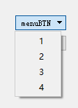
3.QToolButton
3.1常用API
这个类也是一个常用按钮类, 使用方法和功能跟QPushButton基本一致, 只不过在对于关联菜单这个功能点上, QToolButton类可以设置弹出的菜单的属性, 以及在显示图标的时候可以设置更多的样式, 可以理解为是一个增强版的QPushButton。
和QPushButton类相同的是, 操作这个按钮使用的大部分函数都是从父类QAbstractButton继承过来的。
1 | ///////////////////////////// 构造函数 ///////////////////////////// |
QToolButton默认长这样：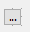
显示箭头后长这样：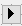
3.2按键的使用
通过API的介绍, 我们可以知道, 使用QToolButton这种类型的按钮, 有4种使用方式:
作为普通按钮, 可以显示文本信息和图标
按钮的图标可以使用不同的方式设置, 并且制定图标和文本信息的显示模式
设置
check属性, 使其可以处于持续的被选中状态关联一个菜单, 点击按钮菜单弹出, 并且可以设置菜单的弹出方式
4.QRatioButton
QRadioButton是Qt提供的==单选按钮==, 一般都是以组的方式来使用(同组中多个按钮同时只能选中其中一个)。操作这个按钮使用的大部分函数都是从父类继承过来的, 它的父类是QAbstractButton。
关于单选按钮的使用我们还需要注意一点, 如果单选按钮被选中, 再次点击这个按钮选中状态是不能被取消的。
- 组：Qt中的Containers应该都算，比如
QFrame、QWidget、QGroup….
4.1常用API
1 | // 构造函数 |
4.2按键的使用
单选按钮一般是以组的形式来使用的, 如果在一个窗口中需要有多个单选按钮组, 应该如何处理呢?
- 在同一窗口中, Qt会认为所有的单选按钮都属于同一组, 如果需要多个单选按钮组, 应该将他们放到不同的子窗口中。
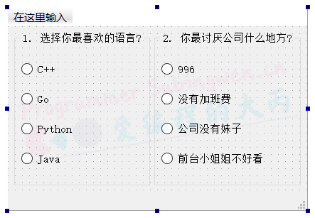
该图中有左右2组，每组都只能选一个。
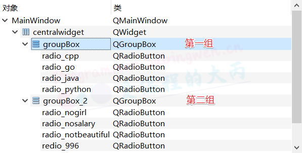
如果我们使用鼠标点击了某个单选按钮, 按钮还是会发射出
clicked()信号, 简单的按钮测试代码如下所示:
5.QCheckBox
QCheckBox是Qt中的复选框按钮, 可以单独使用, 也可以以组的方式使用(同一组可以同时选中多个), 当复选按钮被选中, 再次点击之后可以取消选中状态（默认就开启了Checkable）, 这一点和单选按钮是不同的。
操作这个按钮使用的大部分函数都是从父类继承过来的, 它的父类是QAbstractButton。
5.1常用API
我们对复选框按钮操作的时候, 可以设置选中和未选中状态, 并且还可以设置半选中状态, 这种半选中状态一般需要当前复选框按钮下还有子节点, 类似一树状结构。
1 | // 构造函数 |
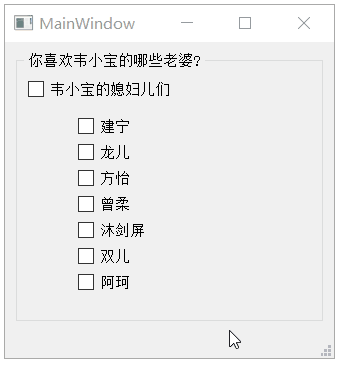
6.QCommand Link Button
该类是QPushBotton的子类，跟QPushBotton用法基本一致，只不过多了个description的属性
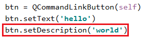
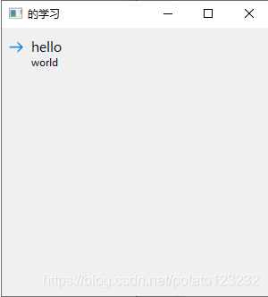
7.QDialogButtonBox
该类是QWidget的子类
QDialogButtonBox是一个按钮组，有若干个标准按键可以直接被添加到该按钮组汇总
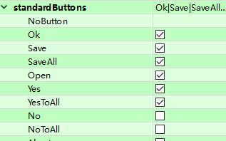
每一个标准按键都有对应的身份(Role)，当标准按键被按下时，会根据被按下按键的身份而发出对应的信号。
1 | //signals |
通过官方文档可知每个标准按键的身份是什么
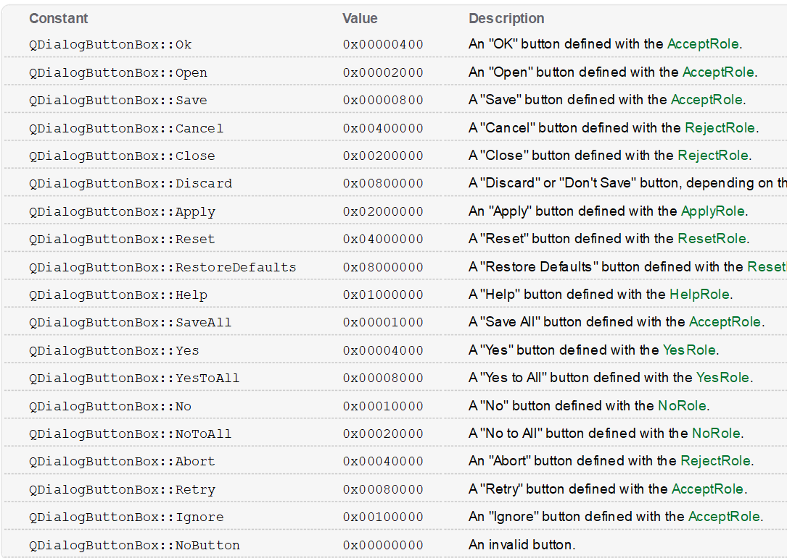